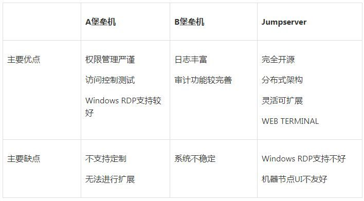
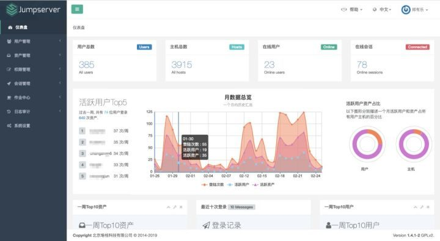
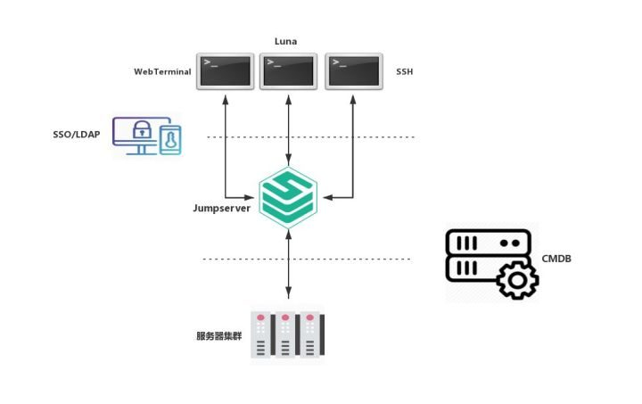
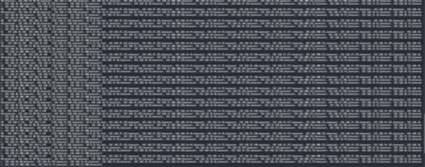
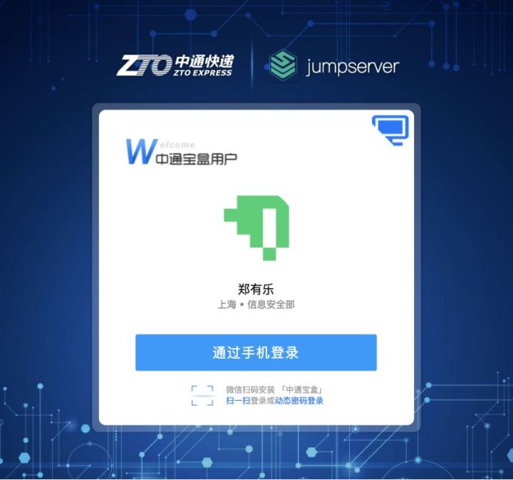
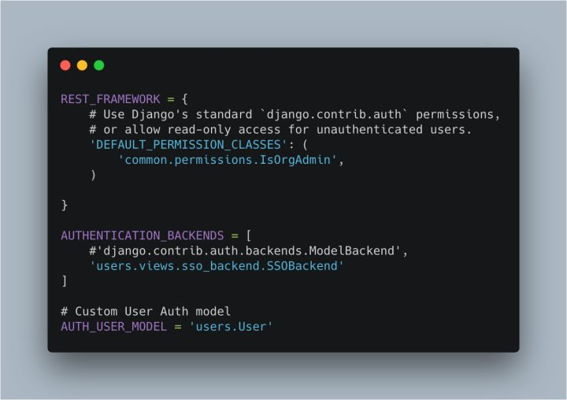
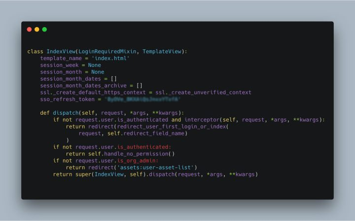
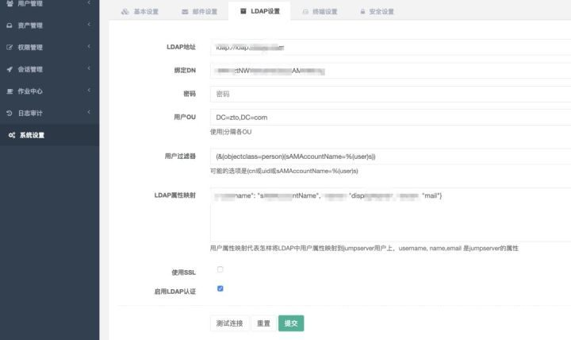
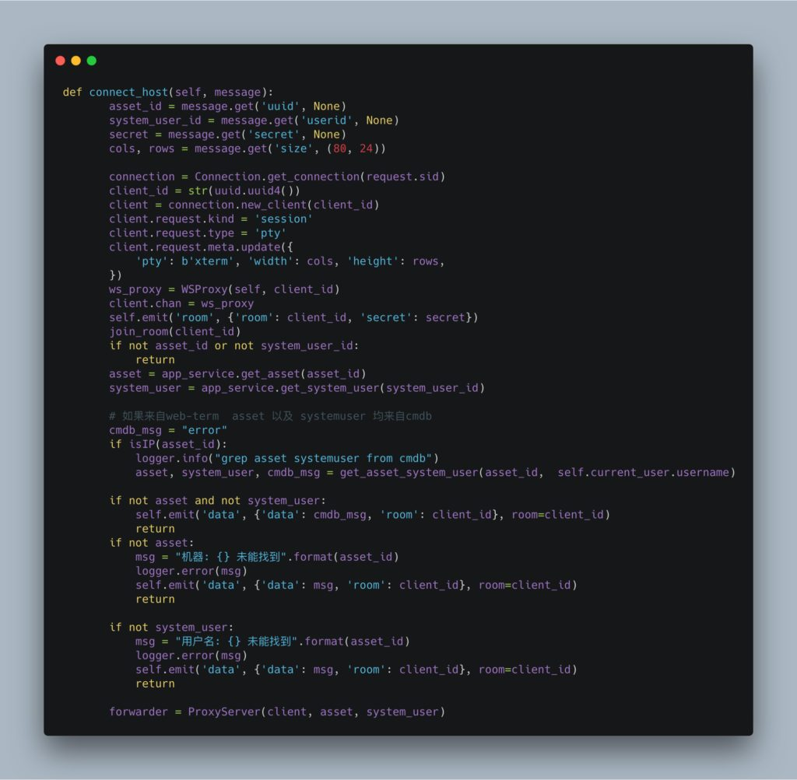
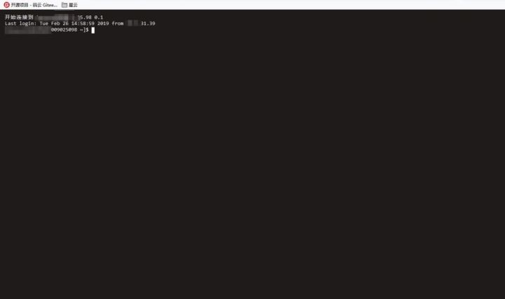

背景
在安全部门与运维部门的工作中或多或少地遇到来源身份不明、越权操作、密码泄露、数据被窃、违规操作等严重威胁，这些威胁常常会给企业带来不可估量的损失。安全运维在安全体系中变得举足轻重，如2018年某公司因为工程师误删生产数据库导致了其服务无法使用590分钟，造成了极其恶劣的影响。在遇到这类的问题时，如何有效的阻止高危操作，快速的定位事故原因，以及事后的复盘都需要一个有效的措施和方案。
提到安全运维，离不开一个重要的系统：堡垒机。堡垒机是基于跳板机理念，作为内外网络的安全审计监测点，依靠强大的防御功能和安全审计功能解决安全访问问题。同时运维堡垒主机还具备了对运维人员的远程登录进行集中管理的功能作用。
为了避免发生安全运维事件，中通安全经过讨论和调研决定结合中通已有的平台和服务如CMDB、LDAP、SSO、发布平台等，共同打造出一套基于堡垒机的主机安全运维落地方案。
堡垒机选型
通过和中通运维部门和开发部门的沟通和调研, 要求堡垒机必须要满足以下需求：
- 堡垒机本身性能要优越，横向扩展方便，能够满足机器和人员日渐增多的需求
- 二次开发方便，最好能够开源方便对接中通的其他平台
- 对Linux服务器支持度够好，性能足够稳定
- 堡垒机要操作简单，界面友好
调研中通已有的堡垒机类型，得出以下对比：

以上我们主要看重Jumpserver的优点是：成本低、易扩展、二次开发容易。结合中通的实际需求，我们决定基于Jumpserver堡垒机进行定制化开发，以满足我们对Linux服务器安全运维方案的需求。对于Windows机器，我们会逐步地在Jumpserver中下线，并控制在一定范围内，存量的Windows机器使用购买的商业堡垒机。
Jumpserver 介绍
Jumpserver是全球首款完全开源的堡垒机，使用GNU GPL v2.0开源协议，是符合 4A 的专业运维审计系统。使用Python / Django 进行开发，遵循 Web 2.0 规范，配备了业界领先的 Web Terminal 解决方案，交互界面美观，用户体验好。Jumpserver采纳分布式架构，支持多机房跨区域部署，中心节点提供 API，各机房部署登录节点，可横向扩展、无并发限制。

图1 Jumpserver 管理后台页面
Jumpserver是整个堡垒机项目的统称，其中又包含三个组件：
- Jumpserver：管理、认证、授权、审计等，主要是用来提供数据管理的服务
- Coco：SSH Server 用于SSH登录 Jumpserver核心功能的主要组件
- Luna：Web Terminal 是一个非常漂亮友好的Web 端Terminal
Coco 和 Luna 是无状态的，可以部署多份，来支持 HA 和 LB。
架构设计
整合各部门的需求提出以下设计目标：
- 提供能够方便嵌入到其他平台的Web端Terminal，扩展安全运维的覆盖面
- 结合CMDB 对其他嵌入Jumpserver WebTerminal的平台进行机器访问权限控制，赋予堡垒机能够自动化授权的功能
- 对接SSO、LDAP，使用中通的统一认证服务，接入中通的帐号风控体系
根据设计目标和Jumpserver的组件特点，我们设计出如下的对接架构：

图2 Jumpserver定制方案架构图
架构解析
我们通过引入中通的SSO/LDAP 服务使Jumpserver接入帐号风控体系，并引入CMDB 使Jumpserver能够接入中通的机器/用户的授权体系，提供通用的Web端Terminal 提高堡垒机的安全访问和安全审计的覆盖面。
其中Luna 和 WebTerminal 都是Web端Terminal。 WebTerminal是基于Luna开发重构的，Luna 和Jumpserver自身的业务绑定的十分密切，不能直接嵌入到其他平台中，需要重构使之能够方便嵌入到其他中通平台的Web端Terminal。
发布平台有自己的用户机器访问控制逻辑，并且这部分权限信息数据量是巨大的。为减少运维人员的手动配置工作量， 我们引入中通CMDB平台。CMDB 已经包含了所有人员对机器资源访问的权限信息，发布平台的人员使用平台上嵌入的 Jumpserver WebTerminal 访问机器的日志，WebTerminal 会根据用户信息与CMDB 安全交互，询问员工是否拥有目标机器资源，有则提供机器的用户以及用户密码，这样发布平台的用户对机器的访问等操作依然受到Jumpserver的记录与控制，CMDB也可以看作是Jumpserver权限集合的扩展。
由于Jumpserver对机器资源和授权信息的UI设计不够合理，用户拥有机器资源越多、权限越多展示的效果却越差。Jumpserver用户机器信息展示效果图：

图3 Jumpserver 机器资源显示效果图
所以这是我们选择不同步CMDB数据到Jumpserver而是去对接CMDB的主要原因，CMDB会根据用户信息以及机器信息对连接进行判断是否授权，无须再在混乱的机器信息中选择机器信息。
实践过程
对接SSO
重构luna代码加入SSO前端控制代码，使之成为依赖SSO进行登录验证可嵌入其他平台的Jumpserver Web Terminal，效果图如下:

图4 Jumpserver对接SSO后登录页面
修改Jumpserver配置文件中的登录认证默认类，替换重写的登录认证功能类：SSOBackend，其中SSOBackend中的 authenticate为新的登录认证功能：

图5 apps/jumpserver/settings.py
修改原生登录控制页面views.py以接入SSO交互控制流程，其中interceptor为调研SSO服务进行登录认证的入口：

图6 apps/jumpserver/views.py
对接LDAP
Jumpserver 已经集成LDAP 通过修改配置就能实现，如图：

图7 LDAP配置页面
对接CMDB
修改Coco 组件增加对接CMDB平台功能。CMDB主要是为外接在其他平台的Web端Terminal连接服务器服务的，外接的Web端的Terminal必须经过CMDB 确认是否拥有目标机器的权限，才能连接到目标机器，修改Coco组件中的 httpd.py文件，嵌入从CMDB获取机器以及密码的功能，如下图:

图8 Coco/Coco/httpd.py
对接发布平台
我们通过在中通的发布平台中嵌入WebTerminal让发布平台的用户能够通过堡垒机连接服务器，发布平台(即第三方平台)的用户通过Coco连接服务器，会从CMDB 获取机器的用户密码，使用效果如图：

图9 嵌入到发布平台中的 WebTerminal 界面
至此，我们对 Jumpserver的三大组件都进行了重写或重构。通过对接SSO/LDAP统一帐号认证体系，显著地减少Jumpserver身份模糊、用户密码泄露等安全问题。第三方平台通过Jumpserver连接服务器及与CMDB进行联动的方式，极大地减少了运维人员添加机器资产和机器密码的工作量。同时，对接发布平台解决了开发人员对机器访问的控制问题。在此过程中我们尽少地修改jumpserver 组件的代码，在满足设计需求的前提下，尽量为以后的升级等工作留下便利，并且通过对Coco的集群部署提高了Jumpserver的负载能力，满足了中通日益增长的员工对服务器连接的需求。
总结和展望
Jumpserver是一个非常优秀的开源堡垒机系统，我们在这个基础上，进行了不少的二次开发，满足了我们对于安全运维需求，经过半年的使用，效果良好。
未来我们希望Jumpserver能够跟中通安全部门风控平台互动，使风控平台能够收集运维人员、开发人员的操作日志、登录等数据，能够识别用户的操作习惯、命令习惯等，经过风控平台的数据分析能够即时的识别出不安全的人员在不合适的地方进行不安全的操作等，并即时的对不安全的行为进行阻断等安全措施，而不是仅仅依赖Jumpserver自带的命令过滤功能。总之，安全需要纵深，就必须依赖与不同平台的相互联动，将各个孤岛进行串联。
致谢：
首先Jumpserver是一个非常好用的开源堡垒机项目。感谢Jumpserver开发团队对Jumpserver持续的进行更新。优雅简洁的代码和编码规范使我们在二次开发的过程中学习到了很多。
团队介绍
中通信息安全团队是一个年轻、向上、踏实以及为梦想而奋斗的大家庭，我们的目标是构建一个基于海量数据的全自动信息安全智能感知响应系统及管理运营平台。我们致力于支撑中通快递集团生态链全线业务（快递、快运、电商、传媒、金融、航空等）的安全发展。我们的技术栈紧跟业界发展，前有 React、Vue，后到 Golang、Hadoop、Spark、TiDB、AI 等。全球日均件量最大快递公司的数据规模也将是一个非常大的挑战。我们关注的方向除了国内一线互联网公司外，也关注 Google、Facebook、Amazon 等在基础安全、数据安全等方面的实践。
作者简介：郑有乐，中通信息安全团队安全开发工程师，擅长安全漏洞检测工具开发。
声明：本文来自中通安全应急响应中心，版权归作者所有。